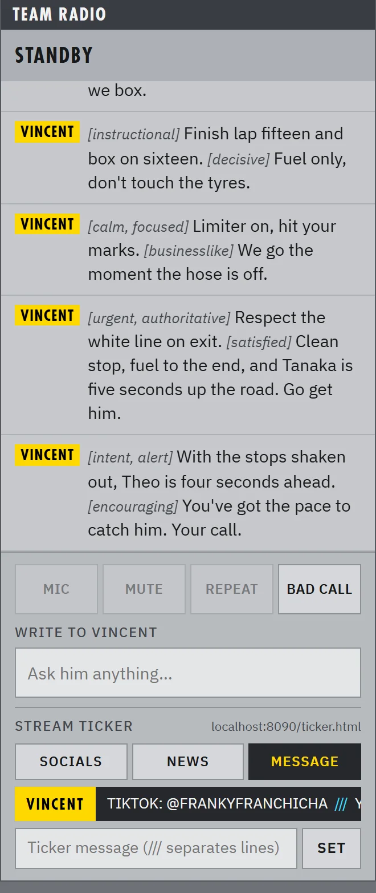

01
A real voice on the radio
Gaps, fuel, who’s quicker, when to box: just ask. VINCENT answers out loud in a natural voice, and calls the big moments on his own — the start, a car slowing ahead, a flag, a rival pitting.
- Push-to-talk on any wheel button
- Two personalities: dry and deadpan, or warm veteran
- Type to him too, if you’d rather
